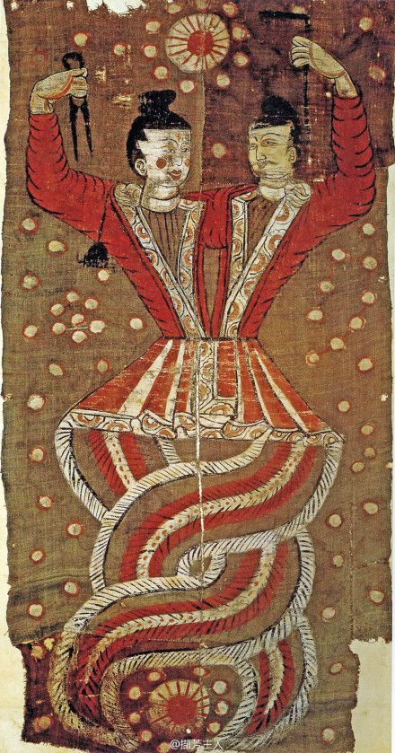

Zeiță Creator și Reparatrice a Cerului
| Nuwa | |
|---|---|
|
 |
|
| Nume chinez | 女媧 (Nǚ Wā) |
| Titlu | Zeiță Creator |
| Simbol | Creația, Reparația |
| Formă | Ființă cu cap uman și coadă de șarpe |
| Realizări | Crearea omenirii, repararea cerului |
| Consort | Fuxi (în unele versiuni) |
Nuwa este una dintre cele mai vechi și mai importante divinități din mitologia chineză. Ea este considerată Creatoare a omenirii și Reparatrice a cerului dărâmat. Legenda sa se întinde peste mii de ani și rămâne o parte esențială a culturii chineze.
Conform mitologiei, la începuturile lumii, Nuwa s-a găsit singură în pământul primordial. Simțind singurătatea, a decis să creeze fiare, iar apoi, mulțumită de creații, a hotarsat să creeze ființe care să-i asemene pe ea - oamenii. Legenda spune că Nuwa a modelat oamenii din pământ și le-a insuflat viață. În felul acesta, oamenii au căpătat forme și personalități diferite, așa cum Nuwa i-a făcut.
Între-o epocă de haos primordial, pilonii care susțineau cerul s-au rupt, iar cerul însăși s-a prăbușit. Aceasta a provocat o catastrofă teribilă - ape necontrolate au inundat pământul, iar focul a distrus totul. Zeița Nuwa, mișcată de grijă pentru creațiile sale - oamenii - s-a ridicat și a reușit să repareze cerul folosind pietre colorate speciale. A tăiat picioarele unei broasce țestoase gigante și le-a folosit ca suporturi noi pentru cer. Prin devoțiunea și puterea ei, a restabilit ordinea în univers.
Nuwa este adesea înfățișată cu o formă unică - cap uman și coadă de șarpe. Aceasta este considerată o reprezentare a unității și echilibrului cosmic. În unele imagini, ea ține în mână o busolă sau hartă cosmică, reprezentand controlul ei asupra universului. Culoarea roșie și aurie în care este adesea pictată simbolizează energia vitală și divinitatea.
Nuwa rămâne una dintre cele mai veneratele zeițe în China și în culturile din Asia de Est. Templele dedicate ei găzduiesc mii de credincioși care vin să-și exprime gratitudine și respect. Ea este simbolul creativității, regenerarii și al capacității de a depăși orice obstacol - o inspirație atemporala pentru orice ființă care se confruntă cu greutatăți.
Site făcut de
Ursulescu Florin-Alexandru, cl. XII-a A, Liceul Atanasie Marienescu